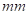
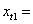
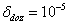
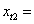

Прорачун еволвенти зупчаног пара
На основу израчунатих димензија зупчаног пара у завршном прорачуну могу се урадити радионички цртежи погонског и гоњеног зупчаника.
Међутим за моделирање профила и бока зупца, потребно је одредити тачке еволвенте и кроз исте повући лучне линије.
Поступак се састоји из следећих корака :
- израчунати лучне дебљине зупца на: подеоној, основној кружници ,
- из центра кружница повући углове који одређују поменуте лучне дебљине еволвентног профила зупца,
- одредити пресечне тачке углова из претходног корака са одговарајућим кружницама, (добијају се по две тачке у односу на осу симетрије еволвенте),
- одредити полупречник кружнице за који се добија нулта дебљина еволвентног зупца,
- кроз добијене тачке измоделирати еволвенту (по две тачке у односу на осу симетрије еволвенте и једна на врху за коју важи да је дебљина еволвентног профила једнака нули).
лучна дебљина зупца на подеоној кружници у главном пресеку:
9.351 
где је:  0.4

угао крајњих тачака лучне дебљине зупца на подеоној кружници у главном пресеку:
0.149 rad
8.540 °
лучна дебљина зупца на основној кружници у главном пресеку:
10.559
угао крајњих тачака лучне дебљине зупца на основној кружници у главном пресеку:
0.179 rad
10.266 °
за случај највећег полупречника темене кружнице имамо нулту дебљину зупца:
0.089591 rad
еволвентни угао се одређује на следећи начин: из Т 7.164 бирамо вредност:  2.6
2.6
рачунамо прву приближну вредност:
0.615289 rad
Рачунамо еволвентни угао:
0.091532 rad
рачунамо грешку:
0.001940817 rad
усвајамо дозвољену грешку: 
Морамо рачунати другу приближну вредност:
0.611404 rad
Рачунамо еволвентни угао:
0.0896069 rad
рачунамо грешку:
1.5923E-05 rad
Морамо рачунати трећу приближну вредност:
 0.611372 rad
0.611372 rad
Рачунамо еволвентни угао:
0.089591 rad
рачунамо грешку:
1.098E-09 rad
Грешка је мања од дозвољене, нулта дебљина зупца се постиже за еволвентни угао:
0.6113719 rad
Највећи полупречник темене кружнице, где добијамо нулту дебљину зупца износи:
71.964
лучна дебљина зупца на подеоној кружници у главном пресеку:
8.617
где је:  0.2
угао крајњих тачака лучне дебљине зупца на подеоној кружници у главном пресеку:
0.069 rad
3.935 °
лучна дебљина зупца на основној кружници у главном пресеку:
11.646
угао крајњих тачака лучне дебљине зупца на основној кружници у главном пресеку:
0.099 rad
5.662 °
за случај највећег полупречника темене кружнице имамо нулту дебљину зупца:
0.049406 rad
еволвентни угао се одређује на следећи начин: из Т 7.164 бирамо вредност: 2.7
рачунамо прву приближну вредност:
0.510955 rad
Рачунамо еволвентни угао:
0.049658 rad
рачунамо грешку:
0.000252 rad
усвајамо дозвољену грешку:
Морамо рачунати другу приближну вредност:
0.510154 rad
Рачунамо еволвентни угао:
0.0494069 rad
рачунамо грешку:
4.72E-07 rad
Грешка је мања од дозвољене, ради вежбе рачунамо и трећу приближну вредност:
0.510152 rad
Рачунамо еволвентни угао:
0.049406 rad
рачунамо грешку:
1.67E-12 rad
Грешка је мања од дозвољене, нулта дебљина зупца се постиже за еволвентни угао:
0.5101523 rad
Највећи полупречник темене кружнице, где добијамо нулту дебљину зупца износи:
135.054